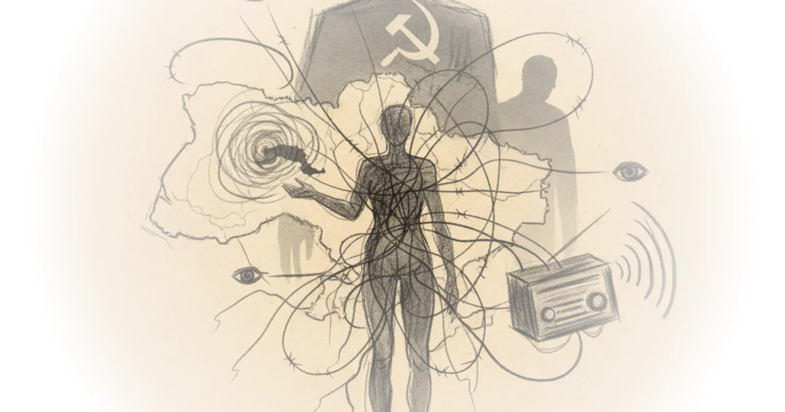

Jeff Stein's memoir offers a rare, ground-level view of the Cold War not as a chess match between superpowers, but as a fragile human drama played out in cramped apartments and hotel lobbies. While official histories focus on nuclear arsenals and diplomatic summits, Stein reveals how the KGB's machinery of surveillance sought to erase individual connections, turning a simple search for family into an act of defiance. This is essential listening for anyone trying to understand the human cost of geopolitical rigidity, where a mother's letter opened by censors is as significant as a missile launch.
The Architecture of Surveillance
Stein begins not with a spy thriller trope, but with a personal quest in 1969 Kharkiv, now a city reduced to ruins by Vladimir Putin's artillery. He describes the visceral memory of his grandmother, Sarah, lighting a yahrzeit candle for relatives whose names appeared on foreign radio broadcasts listing the murdered. "Not hearing the names of her relatives meant they might still be alive," Stein writes, capturing the agonizing uncertainty that defined life under totalitarianism. His journey to find his great-uncle, Maxim Perlstein, exposes the dual nature of the Soviet state: the official facade of the Intourist travel agency, set up in 1929 to guide and monitor foreigners, and the shadowy reality of the KGB.

The author details how he navigated this landscape, first by asking an Intourist guide for help, knowing full well the agency worked with the secret police. When that path was blocked, he turned to a stranger on the street, a risk that paid off when an old man spoke Yiddish and returned with an address. "My heart pounded when I realized that Maxim was alive and in Kharkiv," Stein recalls. Yet, the reunion was immediately shadowed by the state. Upon returning to his hotel, the guide, Svetlana, delivered a flat denial: "There is no such person as Maxim Perlstein in Kharkiv." Stein notes that this was not an isolated incident; an academic in his group had been arrested in a setup after reuniting with parents, forcing her to seek refuge in the U.S. embassy.
This section is particularly effective because it strips away the abstraction of "the Iron Curtain" to show the specific, bureaucratic mechanisms used to isolate citizens. The state's goal was clear: sever the link between the diaspora and the homeland. Stein's decision to use a preposterous conversation about doing "nothing" as a defense against his interrogators highlights the absurdity of living under constant scrutiny. "It was a preposterous conversation, because I had with me two big shopping bags filled with gifts," he notes, underscoring the disconnect between the state's paranoia and the simple human desire for connection. Critics might argue that Stein's privileged position as an American with a Western passport allowed him to escape consequences that would have been fatal for a Soviet citizen, a valid point that underscores the inequality of the system he describes.
"Intourist and the KGB were obviously discouraging family contacts, notwithstanding the thaw."
The Human Rights Lifeline
The narrative shifts from personal discovery to institutional confrontation as Stein takes on the role of executive director for the International League for Human Rights in 1971. Here, the focus moves to the Moscow Human Rights Committee, founded by the renowned scientist Andrei Sakharov and physicist Valery Chalidze. Stein describes the League's monthly ritual of reading United Nations human rights agreements aloud in Russian over the phone, a direct challenge to the Soviet narrative. "For the first time in half a century," Chalidze told him, "a non-governmental public association, not under the control of the Party or the government, has managed not only to survive for more than a half a year but also to establish contacts abroad."
Stein vividly portrays the KGB's reaction: interrupting calls with static, confiscating documents, and sending agents to intimidate the League's New York office. One agent, scanning the small offices, asked, "Where really is the League?" Stein's response—citing the prestigious buildings where board members worked, including the advertising giant Doyle Dane Bernbach—was a strategic bluff to project strength. The stakes were incredibly high. When Chalidze faced arrest, Samuel Dash, a future chief counsel for the Senate Watergate Committee, orchestrated a fake lecture invitation to Georgetown University to secure his exit visa. Chalidze arrived in New York only to have the Soviet Union strip him of his citizenship.
The author's framing of these events as a moral battle rather than a political one is compelling. He writes, "No efforts can be too great, however long the road may take," quoting Sakharov to emphasize the long-game nature of human rights advocacy. This perspective is crucial; it reframes the Cold War not just as a struggle for territory, but for the very soul of civil society. The KGB's tactics were designed to make the cost of dissent unbearable, yet the persistence of these small groups kept the flame of resistance alive.
The Paradox of the Spy
Perhaps the most surprising element of Stein's account is the humanity that occasionally pierced the veil of espionage. He recounts moments where the rigid ideological lines blurred, revealing the spies as complex individuals. In Geneva in 1979, after a U.S. delegate delivered a clumsy speech, a KGB officer offered Stein a chocolate chip cookie and a wry apology: "I'm sorry, I know you take human rights seriously…It must be painful for you to hear this." Later, during a tense period following the Soviet invasion of Afghanistan, a Soviet delegate broke protocol by pressing Stein's hand to his cheek, a gesture of personal warmth amidst official hostility.
These anecdotes serve a vital function in Stein's argument: they humanize the adversary without excusing their actions. He notes a dinner party in Togo where he was locked in a bathroom, only to be rescued by a "blond, well-built Russian James Bond-type" who jokingly declared, "You're now a prisoner of the Soviet Union!" before laughing and unlocking the door. Even in Ethiopia, the KGB head in Addis brought champagne to the CIA station chief during a political crisis, offering a friendly warning about a French girlfriend's safety. "It was a friendly tip, from one pro to pro—and maybe a chit that could be called in later," Stein observes.
This nuance is often missing from Cold War narratives that rely on caricatures. Stein suggests that the intelligence community, despite its brutal machinery, was composed of people who recognized shared professional codes and even shared humanity. However, one must be careful not to let these moments of levity obscure the systemic brutality. The same KGB agents who shared cookies were the ones who opened mail, arrested dissidents, and enforced a regime that killed thousands. The humor is real, but it exists in the shadow of immense suffering.
"They had survived the Nazis by escaping to Kyrgyzstan in Central Asia, whereas those who remained in Lithuania had been murdered."
Bottom Line
Jeff Stein's account succeeds because it refuses to let the Cold War remain an abstract concept, grounding the era's high-stakes politics in the intimate struggles of families and the quiet courage of human rights defenders. The strongest part of his argument is the demonstration that the KGB's greatest fear was not military defeat, but the simple, unbreakable power of human connection. Its vulnerability lies in the fact that these personal stories, while powerful, cannot fully capture the scale of the repression that defined the Soviet Union for decades. Readers should watch for how these historical patterns of surveillance and isolation echo in modern authoritarian regimes, proving that the tools of control evolve, but the human desire for freedom remains constant.